Pengantar
Bapak/Ibu, pemanfaatan media pembelajaran numerasi untuk murid dengan hambatan pendengaran merupakan salah satu isu krusial dalam dunia pendidikan luar biasa. Secara umum, media pembelajaran memainkan peran penting untuk semua murid, tetapi perannya akan menjadi semakin vital bagi mereka yang berkebutuhan khusus.
Beberapa pertimbangan utama dalam pemanfaatan media pembelajaran numerasi untuk murid dengan hambatan pendengaran, antara lain:
- Keterbatasan pendengaran dan implikasinya dalam pembelajaran.
Murid dengan hambatan pendengaran mengalami kehilangan fungsi pendengaran baik sebagian maupun total. Keterbatasan ini, berdampak besar pada perkembangan bahasa dan komunikasi mereka sehingga akan memengaruhi pembelajaran. Pembelajaran menjadi lebih abstrak karena konsep-kosep numerasi yang diajarkan secara lisan tentunya akan sulit dipahami oleh murid dengan hambatan pendengaran. Tanpa media yang tepat maka penjelasan verbal yang abstrak tentang angka, operasi hitung, atau konsep numerasi lainnya tidak dapat dimengerti dengan baik. - Tantangan dalam memahami konsep numerasi.
Karena keterbatasan itulah maka murid dengan hambatan pendengaran akan kesulitan memahami konsep bilangan dan operasi hitung. Hal ini juga akan berpengaruh pada tingkat konsentrasi jika diberikan penjelasan secara abstrak. Media pembelajaran inovatif dan interaktif dapat membantu menarik perhatian murid sehingga mampu meningkatkan konsetrasi. - Kebutuhan akan media pembelajaran yang relevan dan inovatif.
Karena hambatan yang dimiliki, maka murid dengan hambatan pendengaran ini dapat dibantu dengan cara menyediakan media pembelajaran yang sesuai dan inovatif untuk meningkatkan kemampuan komunikasi numerasi murid.
Bapak/Ibu, pada sesi kali ini kita akan membahas tentang ragam media pembelajaran numerasi yang biasa digunakan oleh guru SDLB.
1. Media Peraga/Alat Peraga
Para ahli menekankan pentingnya media ini karena sifatnya yang nyata dan dapat dipegang, sehingga membantu murid memahami konsep-konsep matematika yang abstrak. Alat peraga ini memadukan benda nyata (konkret) dengan representasi visual, yang membantu murid dengan hambatan pendengaran untuk memahami konsep abstrak numerasi melalui pengalaman langsung dan visual.
| Media Peraga | ||
| Deskripsi | Merupakan media nyata yang bisa disentuh dan dimanipulasi langsung oleh murid. | |
| Karakteristik |
|
|
| Contoh Media | Alat peraga nyata |
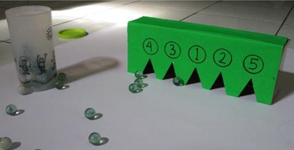 Sumber: https://www.rumahbunda.com/permainan-dan-kreativitas/game-seru-kotak-skor/ |
| Ular tangga numerasi |
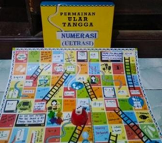 Sumber: https://www.inovasi.or.id/id/belajar-sambil-bermain-dengan-ultrasi-si-ular-tangga-numerasi/ |
|
| Balok satuan |
Sumber: https://www.tokopedia.com/find/kubus-satuan?utm_source=google&utm_medium=organic&utm_campaign=find |
|
| Pizza pecahan |
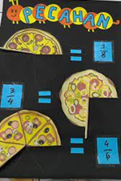 Sumber: https://www.tiktok.com/discover/contoh-media-pembelajaran-matematika-sd |
|
| Papan perkalian |
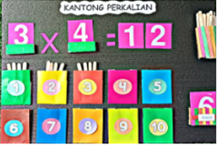 |
|
| Kartu bilangan |
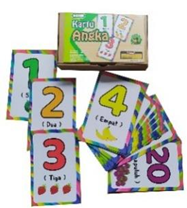 Sumber: https://mainankayu.com/851/8/mainan/kartu-angka.html |
|
| Uang mainan |
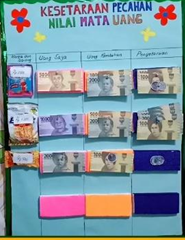 |
|
| Media Visual Cetak/Gambar Dua Dimensi | ||
| Deskripsi | Representasi gambar atau visual dua dimensi dari benda nyata | |
| Karakteristik |
|
|
| Contoh Media | Poster garis bilangan |
|
| Lembar kerja visual (gambar jam, pecahan, bangun datar) |
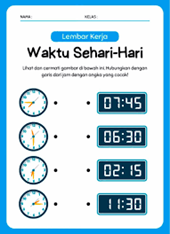 Sumber: https://www.facebook.com/jalurppg.id/posts/lkpd-matematika-pengukuran-waktu/1599554884321825/ |
|
| Peta skala berwarna |
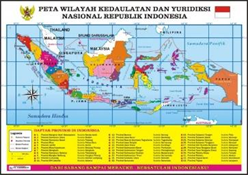 |
|
| Grafik dan infografis numerasi |
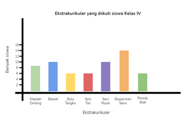 |
|
2. Media Visual-Interaktif (Non-digital)
Media visual berupa gambar, papan, atau kartu juga sering digunakan untuk membantu murid memahami konsep numerasi. Media visual interaktif (nondigital) menyediakan representasi visual dari konsep yang abstrak. Media ini menggabungkan elemen visual dengan aktivitas yang melibatkan murid secara fisik.
| Media Visual-Interaktif (Nondigital) | ||
| Deskripsi | Media berbasis teknologi atau simbol yang tidak berwujud fisik langsung | |
| Karakteristik |
|
|
| Contoh Media | Papan Flanel Kartu Gambar |
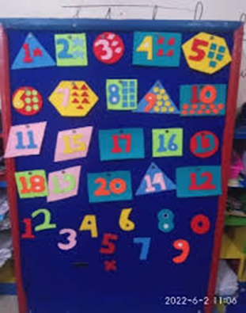 Sumber: https://journal.ikipsiliwangi.ac.id/index.php/ceria/article/view/22726/6794 |
| Board Games |
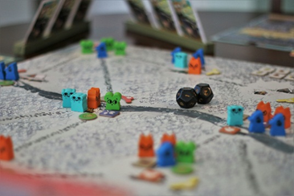 |
|
| Puzzle Angka | 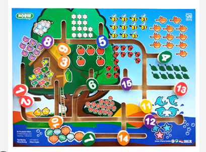 | |
| Game Ular Tangga Numerasi dengan Kartu Perintah Visual |
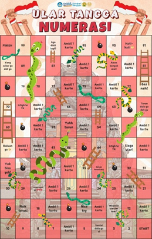 Sumber: https://id.pinterest.com/pin/ular-tangga-numerasi-in-2025--678073287682901984/ |
|
3. Media Digital Interaktif
Seiring perkembangan teknologi, media digital menjadi pilihan yang semakin populer untuk membuat pembelajaran lebih interaktif, menarik, dan sesuai dengan kebutuhan individual murid. Media interaktif untuk pembelajaran numerasi bagi murid dengan hambatan pendengaran dapat berupa video animasi yang menggunakan bahasa isyarat, permainan edukatif yang melibatkan gerakan dan visual, serta aplikasi berbasis augmented reality (AR) yang menggabungkan elemen visual, teks, dan isyarat. Media interaktif ini dirancang untuk memfasilitasi pemahaman konsep numerasi melalui pengalaman belajar yang lebih menarik dan mudah diakses oleh murid dengan hambatan pendengaran.
| Media Interaktif | ||
| Deskripsi | Segala media pembelajaran yang memungkinkan murid untuk berinteraksi secara aktif, baik melalui sentuhan, gerakan, atau manipulasi, dengan mengandalkan visual sebagai cara utama menyampaikan informasi. | |
| Karakteristik |
|
|
| Contoh Media | 3D Animath |
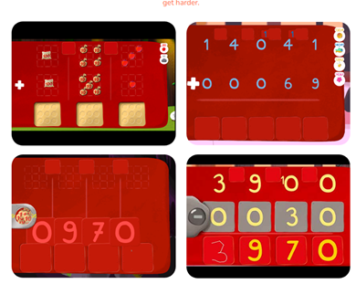 |
| Game puzzle angka |
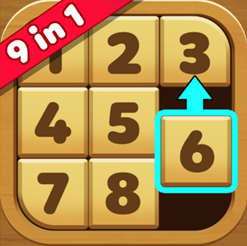 Sumber: https://play.google.com/store/apps/details?id=com.twitchtimetech.classic.number.puzzle&hl=id&pli=1 |
|
| Augmented Reality (AR) |
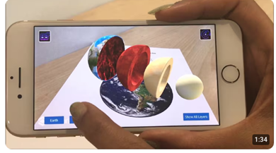 |
|
| Game Edukasi |
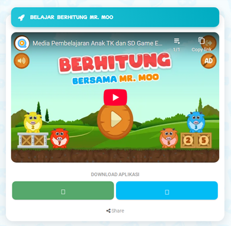 Sumber: https://qreatif.id/apps/pages?id=qreatifid-berhitung-mr-moo |
|
Nah Bapak/Ibu, dapat disimpulkan bahwa media pembelajaran, dengan kemampuan visualisasi, interaktivitas, personalisasi, dan fitur aksesibilitasnya, menjadi alat yang sangat efektif untuk meningkatkan pembelajaran numerasi bagi murid dengan hambatan pendengaran. Pemanfaatan media yang tepat akan membantu mereka mengatasi hambatan komunikasi, memperkuat pemahaman konsep abstrak, dan pada akhirnya, mencapai potensi akademik yang lebih tinggi dalam numerasi.
Selanjutnya, kita akan mencermati beberapa contoh praktik baik pemanfaatan media pembelajaran yang diintegrasikan dalam pembelajaran melalui rencana pelaksanaan pembelajaran (RPP) atau lesson plan.